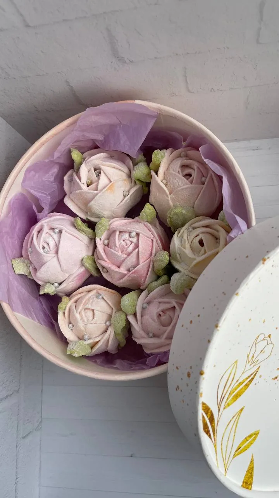
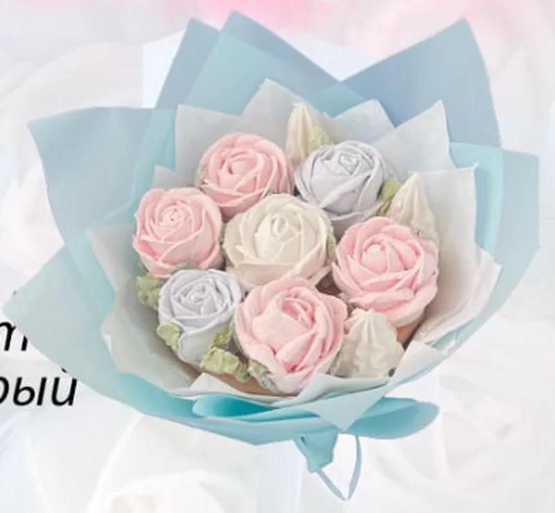
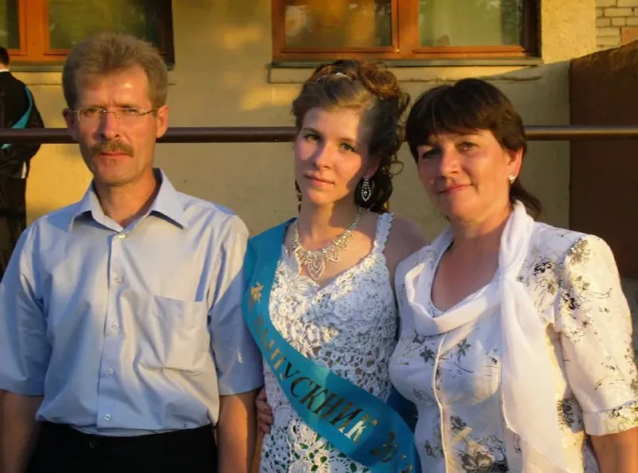
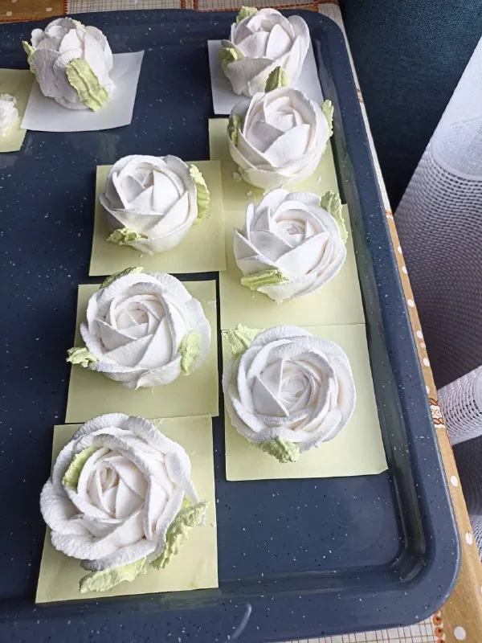
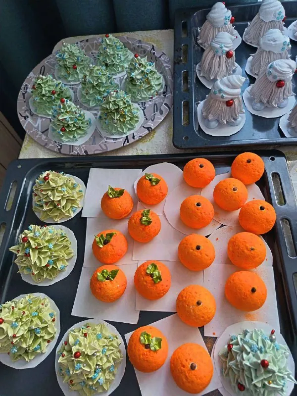
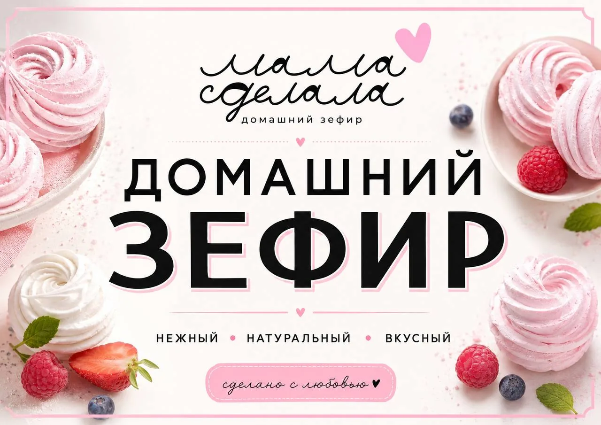
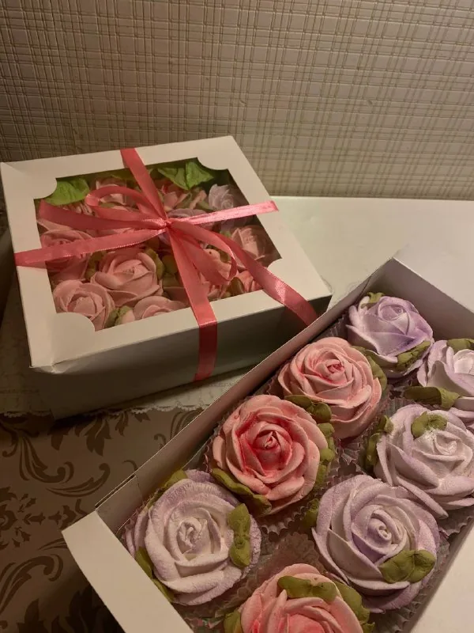
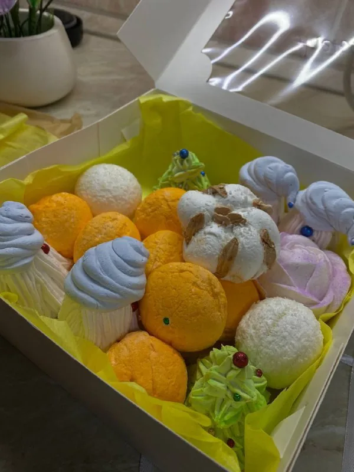

Пюре варим сами
Из яблок и ягод. Или берём натуральный джем. Никаких ароматизаторов «со вкусом».
каждый лепесток
мама отсаживает вручную, кондитерским мешком. Без формочек. Поэтому двух одинаковых роз у нас не бывает.

Из яблок и ягод. Или берём натуральный джем. Никаких ароматизаторов «со вкусом».
Розы и пионы мама «вырисовывает» кондитерским мешком, а не штампует формочкой.
Без консервантов. Храните при комнатной температуре в закрытом контейнере.
Лента, фирменная бирка, карточка с составом и крафтовый пакет. Открытку вложим бесплатно.
Работаем по предзаказу. Цвет коробок и тишью согласуем в личных сообщениях.
Кнопка «Заказать» открывает Telegram Любы. Telegram не умеет подставлять текст в личку, поэтому название набора можно скопировать и просто вставить.

зефирная флористика
Мама прошла курс зефирной флористики, и теперь у нас есть настоящие букеты. Каждый цветок в нём съедобный: розы, тюльпаны, сирень, пионы.
Такой букет можно подарить, поставить на стол, сфотографировать сто раз, а потом съесть за чаем всей семьёй.
Букет заказываем за 10 дней: каждый лепесток собирается вручную.
Заказать букет
Мама сделала, а я рассказываю. Меня зовут Люба, я веду канал, принимаю заказы и часто сама привожу вам коробки.
Зефир делает мама, Вера. Она мастерица на все руки: вяжет, шьёт и однажды связала мне платье на выпускной. Летом 2023 года она попробовала зефир, и с тех пор на нашей кухне всегда пахнет яблоками.
Главное для меня: мамины горящие счастливые глаза, когда она видит, как вы радуетесь. А покупной зефир я теперь просто не могу есть.
Из яблок и ягод, долго и терпеливо, как варенье у бабушки.
Пюре, яичный белок и агар-агар превращаются в плотную воздушную массу.
Кондитерским мешком, лепесток за лепестком. Масса застывает быстро, так что руки у мамы очень ловкие.

Зефиру нужно время стабилизироваться. Он не любит спешку. Потом собираем набор и перевязываем лентой.

Основа: натуральное яблочное или ягодное пюре собственного приготовления.
Натуральное яблочное/ягодное пюре, джем, сахар, агар-агар, яичный белок, вода, глюкозный сироп. Возможно добавление небольшого количества пищевого красителя и лимонной кислоты.
Хранить при комнатной температуре в закрытом герметичном контейнере. Срок хранения 14 дней.
Не храните в холодильнике и на открытом воздухе: зефир заветрится и засохнет.
Поводы: день рождения, 14 Февраля, 23 Февраля, 8 Марта, Пасха, 1 Сентября и День учителя, День матери, Новый год, подарок коллегам и без повода.
В Telegram @Love_mtvv, в комментариях канала или по телефону +7 983 053-04-67.
Набор, вкус, цвет коробки и дату. Пришлём фото, если нужно подобрать оттенок.
Самовывоз в Томске (район Радонежского или рынок), Яндекс Доставка по городу или СДЭК по России.
После приготовления ему нужно время стабилизироваться. Каждый цветок мы делаем вручную, а для больших заказов нужно несколько замесов. Мы не отдаём рыхлый и некачественный продукт, поэтому заказывайте заранее.
Перед праздниками приём заявок закрываем раньше: например, новогодние заказы принимаем до 25 декабря.
Отправляем СДЭК и тщательно упаковываем. Зефир доезжает целым: клиенты присылали нам фото «после».

Ищите розовую табличку «Домашний зефир». Можно попробовать, выбрать готовый набор и познакомиться с нами лично.
Адрес и дни работы точки скоро появятся здесь и в канале.
Следить в каналеПоделитесь, пожалуйста, обратной связью про наш зефир) все ли понравилось?)
Здравствуйте, все понравилось, очень вкусно
Здравствуйте! И аромат и вкус девочкам очень понравилось) я к сожалению, не пробовала))
Спасибо большое ☺️

Люба, доброе утро, девочкам и мне очень понравились. Спасибо большое 🌷
очень приятно) благодарю вас)
Поделитесь, пожалуйста, обратной связью про наш зефир) все ли понравилось?)
Здравствуйте, да все хорошо) ❤️

Все отзывы живут в комментариях нашего канала. Мы всё-всё читаем.
14 дней при комнатной температуре в закрытом герметичном контейнере.
Нет. В холодильнике и на открытом воздухе зефир заветрится и засохнет. Лучше всего ему в закрытом контейнере на кухне.
Обычный заказ минимум за 4–5 дней, большие коробки за 5–7, зефирный букет за 10 дней, доставку в другой город за 2 недели.
Зефиру нужно время на стабилизацию после приготовления, а каждый цветок делается вручную. Мы не хотим отдавать рыхлый продукт.
Да, СДЭКом по всей России. Коробку упаковываем очень тщательно. Заказывайте минимум за 2 недели.
Конечно. Вкус, цвет зефира и коробки согласуем в личных сообщениях. Цвет коробки может отличаться от фото.
Да, бесплатно. Выберите фразу или напишите свою.
Самовывоз в районе Радонежского или на нашей точке на рынке. Также можем отправить Яндекс Доставкой (оплачивается по тарифу).
Бывают. Их мы публикуем в Telegram-канале, так что подписывайтесь.